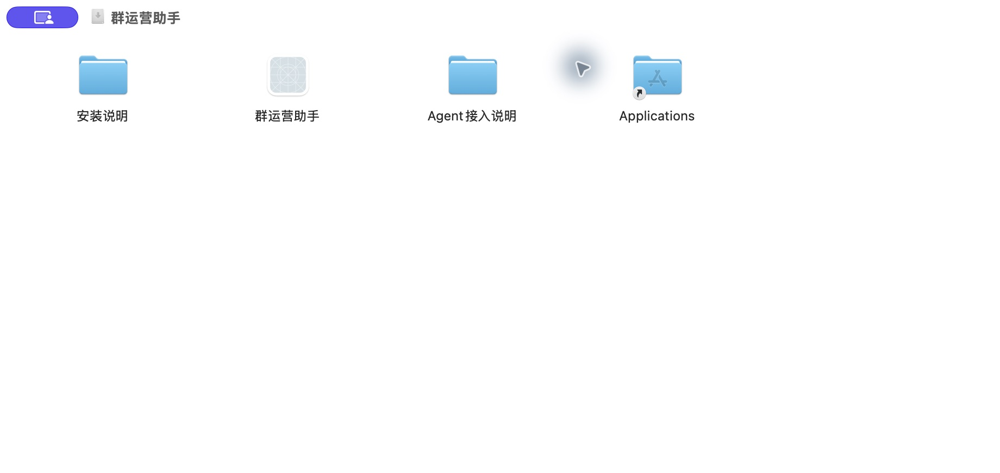
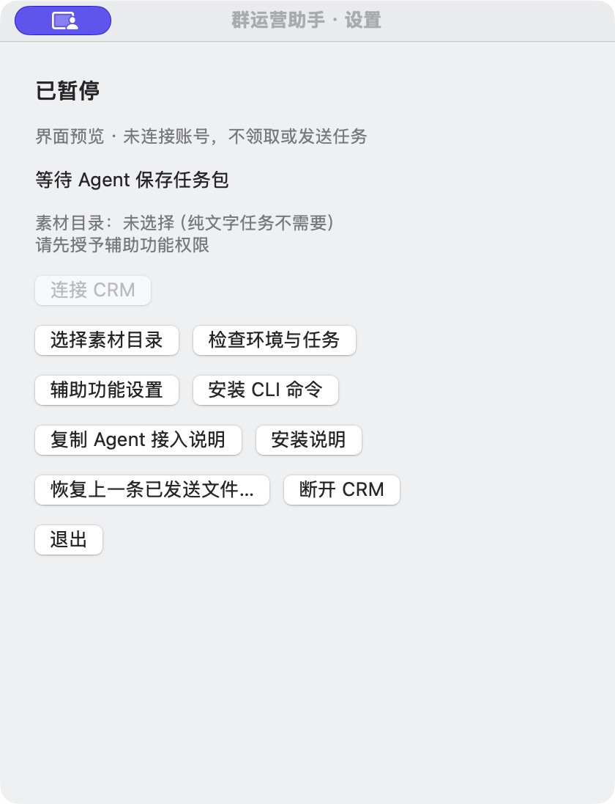
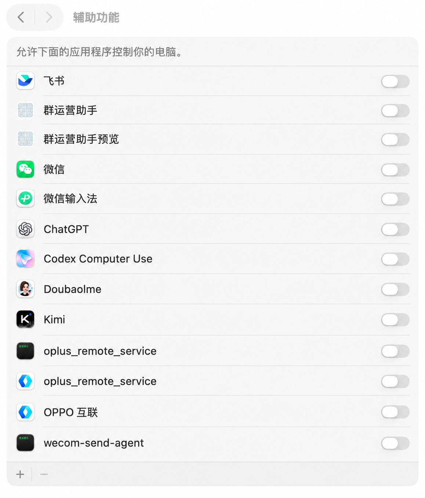

下载、安装、首次准备，然后把每天的内容交给本地 Agent。适用于当前 CRM 企业内的员工账号。本文与安装包内离线手册使用同一份内容。
从 CRM「群运营」下载 Mac 安装包，打开 DMG。把“群运营助手”拖到“Applications／应用程序”，复制完成后，从应用程序打开它。不要直接在磁盘映像中日常运行。

成功标志：应用程序中存在“群运营助手”，打开后出现三个图标的小悬浮条。
悬浮条依次是“启用”“暂停”“设置”。按住任意区域或图标拖动即可移动，松开后记住位置；轻点图标才执行操作。点击齿轮进入设置，点击“连接 CRM”。浏览器打开后，用自己的 CRM 账号登录，核对电脑名称和账号，再确认连接。无需手输连接码；页面提供的短码仅作备用。连接成功仍保持暂停。

上图为未连接的设置预览；安装版的“连接 CRM”可点击。浏览器登录与 CLI 登录是两种既有授权，设备连接不能代替 CLI 登录。若浏览器要求扫码或本机验证，请由本人完成。
设置中点击“辅助功能设置”，进入「系统设置 → 隐私与安全性 → 辅助功能」。找到“群运营助手”，开启开关。若列表没有它，点“＋”，选择“应用程序”里的安装版，再打开。系统要求触控 ID 或电脑密码时由本人验证。

返回助手点“检查环境与任务”。成功标志：辅助功能及输入控制检查通过。图为本机截图经脱敏处理的操作示意，开关状态以自己的电脑为准；其他应用无须照搬。
若钥匙串要求访问原连接记录，核对应用是“群运营助手”后自行允许；正式签名升级仍须独立验收，不能保证永不提示。需要刷新旧授权时按系统指引处理，不反复安装多个副本。
在设置点“选择素材目录”，选择存放任务 Markdown、图片和文件的文件夹。Agent 也必须能访问这个目录。纯文字任务不需要文件目录。文件通过相对路径引用，素材字节保留在这台 Mac。
打开并登录企业微信，再点“检查环境与任务”。无任务时仅检查环境；目标群导航在首次启用真实任务时检查，通过后才发送。结构不识别会停止并给出原因，不会按旧坐标猜点。
设置点“安装 CLI 命令”，然后点“复制 Agent 接入说明”，粘贴给你的本地 Agent。CLI 随包提供，无需另外安装 Node、Python 或 Homebrew。即使 PATH 没有包含用户命令目录，Agent 也可调用绝对路径。
/Applications/群运营助手.app/Contents/MacOS/aicrm-cli
首次正常登录由本人在终端完成，密码隐藏输入，不要发送到聊天：
"/Applications/群运营助手.app/Contents/MacOS/aicrm-cli" auth login --username 你的CRM账号
401 表示需要恢复正常登录；403 需要核对来源授权、角色和计划归属。遵循现有 CRM Access 设置，不把设备凭据复制给 CLI，也不降低账号策略。CLI 的配置和已有凭据在更新时保留。
启用一次只绑定当前包。新包等待下一次点击；应用重启不会自行继续。素材缺失或摘要错误时，本次启用不发送任何消息。
点击暂停会停止后续操作，已经触发发送的那一条仍保留原结果回报。不要把暂停理解为撤回。断网、重启、错误群或不兼容界面都会停止；输入框如有残留内容，先核对并自行处理，不要盲目再次按回车。
“结果未知”不能通过重新保存或换幂等键补发。先读回原任务并核对原消息；如确实是已发送文件，使用设置里的“恢复上一条已发送文件”对账原记录，不重新发送。
技术上的“客户端已提交”不代表群成员已读。发送验收与安装验收分别记录。
手册版本 0.2 · 助手与安装窗口为本次真机截图（设置为未连接预览）；权限图为脱敏处理示意，不能代替其他 macOS／企微版本实测。辅助功能参考：Apple 官方说明。